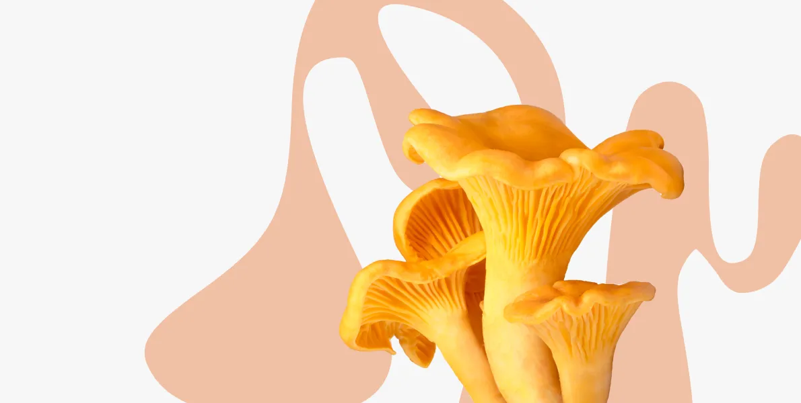

Грибвики  Съедобные Лисичка
Съедобные Лисичка

Лисичка
Сезонные
оранжевый цвет
Мясистая и нежная текстура
Характерный фруктовый аромат
Рыжие споры
Описание
01
Лисичка — съедобный гриб с ярко-оранжевым окрасом и характерным ароматом. Он имеет мясистую текстуру с нежным вкусом и ароматом фруктов.
Лисички можно найти в лесах Европы, Северной Америки и Азии.
Употребление
02
Лисички можно употреблять как в свежем, так и в сушеном виде. Они идеально подходят для приготовления супов, соусов, рагу и других блюд.
Сезон сбора
03
Лисички собираются в сентябре — октябре, но могут быть найдены и в другие месяцы, в зависимости от климатических условий.